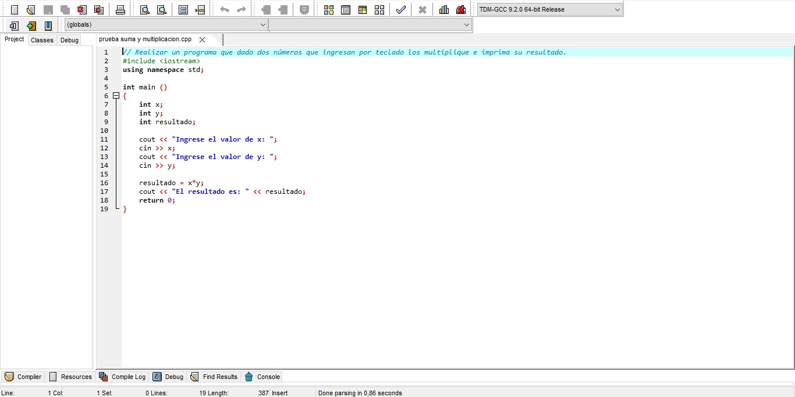

--Laboratorio de Programación --
// Esta página está dedicada a contarles que hacemos y que aprendemos en la materia de taller "Laboratorio de Programación".
> Este año y el anterior, estuvimos aprendiendo a usar el lenguaje de programación C++. Ahora incluso lo aplicamos a Arduino en la materia Laboratorio de Hardware.
> Los profesores nos dan ejercicios sobre lo que queremos automatizar, y de ahí nosotros hacemos el código para que funcione. Dentro del código, le damos instrucciones a la computadora sobre que tiene que realizar, con un lenguaje específico.
> A la hora de programar es importante tener en cuenta la matemática, el inglés y la lógica.

> ejemplo de un código de C++ en el que se realiza suma y multiplicación
Volver